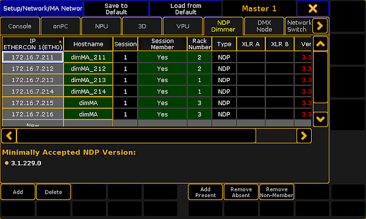

Follow these guidelines to delete the MA NDPs in the network configuration.
Open the MA Network Configuration.
-Press Setup and tap MA Network Configuration.
-The window MA Network Configuration opens.
Tap NDP Dimmer.

MA Network Configuration – NDP Dimmer
Important:
To delete MA NDPs, remove them form the session. To do so, tap and hold a cell in the column Session Member until Yes disappears. The cell turns gray.
Tap Delete.
Hint:
To select several MA NDPs, use the "lasso" selection in the column Session Member.
The MA NDPs have been deleted in the network configuration.